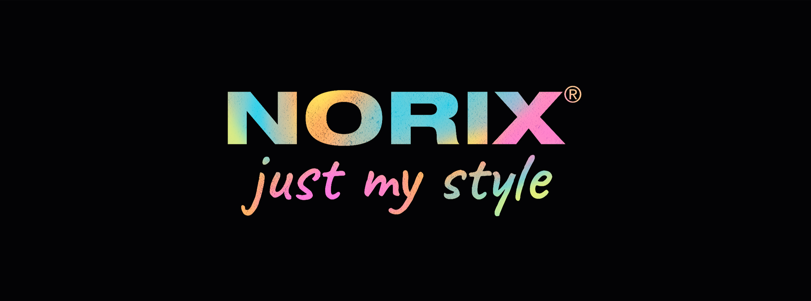

STAEDTLER SOCIAL CAMPAIGN
BRAND

STAEDTLER
PROJECT
ADVERTISING
BRIEF
SOCIAL MEDIA CAMPAIGN
Never break the flow
STAEDTLER ranks among the world's leading manufacturers and suppliers of writing, colouring, drawing and modelling products and is one of Germany's oldest industrial companies. With its products, STAEDTLER inspires the creativity of its customers throughout their life: from their first attempts at colouring in early childhood to products for creative work.
NORIX is the absolute must-have to express yourself. With the 10+ range, you can write your very own success story. The products are characterized by their stylish design, easy use, as well as for environmentally friendly and intelligent surplus values (CREATE - EASY - ECO - SMART). The product presents the SMART DESIGN technology that introduces the new, innovative and unique pencil shape that boosts the writing and drawing comfort.
To experience your creative flow in a professional environment means to have maximum focus and fun at the same time. With NORIX, the pencil with extremely high break-resistance of the tip, you will never break the flow of your ideas!
